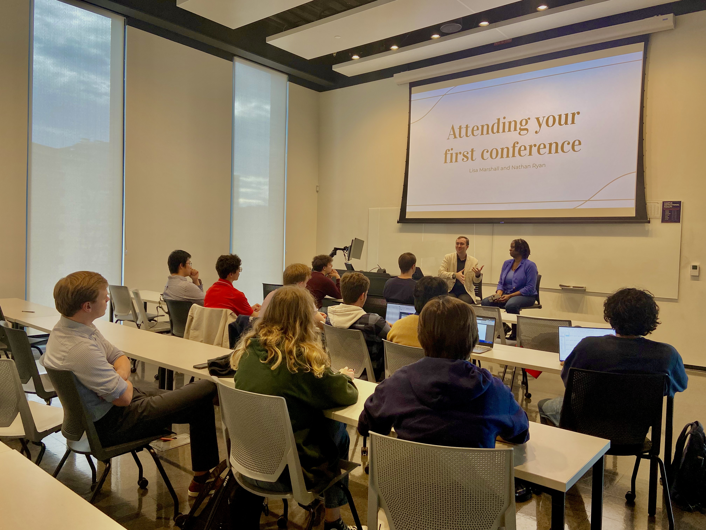

We’ve all heard of “death by PowerPoint,” I think most people have similarly heard of “death by panel.” In common is an overwhelming sense of monotony or frustration. "Death by PowerPoint" typically describes a presentation where the audience is bombarded with too many slides, overly detailed content, or endless information, leading to disengagement and mental fatigue. Similarly, "death by panel" refers to situations where a panel discussion is so long, poorly structured, or unengaging that the audience loses interest and feels mentally drained. You can stave off mentally draining the audience with a very engaging and energetic speaker, but only a combination of energy and actionable takeaways can save either situation.
Looking back through the various notes I've made following/during panels, I've compiled these thoughts.

1. What should your panel be about?
I can’t count the number of “how to apply to grad school” or “how to write a resume” panels I’ve seen advertised in my time as a student. I’m sure many of them are fine, but there’s a broader problem, death by panel means people aren’t getting the information they need. I argue that a panel can serve a list of functions (bring new information, bring new perspectives, or start new conversations) and the best panels serve all of them. How then do you get a panel that brings the attendees new information, perspectives, and conversations all in one go? The easiest thing in my mind is to focus on a very specific subject, and “how to write a resume” is not a specific subject. Your mindset should be to think small. Normally we think of engaging sessions as making people see the big picture, but this big picture does not come from the organizer, it comes from the panelists. Let them do their thing!
If you’re struggling to think of a specific subject, ask yourself: “what is the general topic I want to cover, and how can we focus on one part of that topic?” This isn’t to say that there’s not a place for broad topic panels, but you have to work all the harder to make it beneficial for the attendees; easiest when your speakers mesh really well together and are very well-known. Hopefully, by the end of this blog, I can convince you that the famous panelist crutch isn’t good enough for you anymore. Broad panels have an unfair pitfall associated with them, I’ll be the first to acknowledge this, where attendees form preconceptions about where it will go and as everyone knows “expectations are premeditated resentments.” My dream is to live in a world where I can go to a conference and hardly ever see a broad panel crumble under the weight of pleasing everyone because they didn’t define the conversation ahead of time.
2. What makes for a good moderator?
The best panels I have been to/on have one thing in common, the moderator is a rock star. And I don’t mean that the moderator dominated the conversation or had amazing things to say, a rock star moderator is (in my mind) someone who is using the panel to actively ask questions they really want to know the answer to. I suppose this means that I’m saying your moderator has to be a little selfish, hopefully not at the expense of your audience. I’ll say, I haven’t always agreed with a rock star moderator’s line of questioning (because I found the particular topic uninteresting or not relevant to me), but when they are actively listening and you can tell they are getting the most out of the conversation, that’s when everything comes together.
These rock stars do not have to, as you might immediately jump to, be younger or inexperienced members of a subfield, but they do have to want to know more about the topic of your panel. This ties back into my previous point about making the topic very specific, there’s always something more to learn and that’s the conceit of a panel. In this way, I’d heavily advocate that your moderator is able to help decide on the topic, or that you know they are interested in said topic before you start putting anything else on the panel together.
Something I try to do every time I moderate a panel is to summarize responses to questions. It shows the panelists what you’re picking up on and serves as a reminder to the audience if you have more than one response. Another thing that I think needs to be said again and again is that not every panelist needs to or should weigh in on every question. It is up to a good moderator to know enough about their panelists to direct questions precisely and keep the conversation going, but going down the line to ask each panelist the same question will invariably give you the response of “I don’t know what else I can say, my colleagues have said it so nicely.” Every question should be connected to the overall conversation and the best moderators transition from one topic to the next by tying in experience from their panelists. A successful strategy to allow multiple panelists to weigh in on a topic is to address parts of the topic to different panelists. When writing a question, or receiving one from an attendee, I am always thinking about how I can direct parts of it to different panelists.
3. What makes for a good panelist?
I’m going to tie a good panelist back to the very first point about a narrow topic again. Your choice of a panelist should be heavily informed by the topic you want to cover, and the best way to do that is reach out to people and take the time to put the word out. Find the right people to speak on your topic and communicate the very narrow focus you want. It really helps if they know each other already, and it really really helps if they’re friends or complete strangers.
The role of a panelist should be a generous one, to some extent it’s self-serving to get your name and ideas out there about a topic, but the mindset of a good panelist is a generous one. Where the moderator is selfish and is trying to pull as much information out of their panel, the panelists should be aware of their audience.
4. How should the panel be structured?
Once you have your panelists, then you can get into which sub-topics you want to address. Now you might be thinking to yourself, “but we’re already thinking small for the topic of the panel, can we really think even smaller?” Yes! Get creative, you’re taking on the responsibility of entertaining and informing the attendees and that’s no small undertaking.
5. How much preparation should go into this?
The flow of conversation should be an organic thing, again, driven by your rock star moderator, but with more than one panelist you have to fake it a little bit because everyone has a different idea of how the conversation should go and that can be very confusing in practice.
Prepare backup topics or paths
Don’t be precious about the exact flow and structure, so much so that you miss an opportunity to make a transition from one topic to the next. Because you’re setting out to fake an organic flow of dialogue, any chance you have to make it real
6. How much of a plan should you have?
It takes longer than you think, and you lose people in the transition between panelists and the dialogue. If they want to prepare remarks about something, you can let them work it in to the conversation or take what they would have presented and form questions around those points to let them “organically” announce something. This ties back to the previous point about taking every opportunity you have to structure in some “organic-ness” to your session.
7. When should you accept questions?
If you decide to accept questions from the audience, think about the size of the event. If there’s a large audience, then you have to accept questions electronically and screen them before hand. My rule of thumb is that if you don’t really need a microphone for your panelists to reasonably receive a question or for your audience to hear the panelists, then you can probably allow people to ask questions directly in real time. This isn’t to say you shouldn’t use a microphone, to be inclusive you should always take advantage of every feature you can, but I think this rule of thumb is reasonable short-hand for the size of the room.
8. Pet Peeves
Here's a list of assorted pet peeves I found in my notes..
Holding the microphone too close and not following your mouth when turning.
Not signaling excitement in your voice.
Not doing a mic check before hand so they know how loud to be (this is not always reasonable, but where possible it’s so useful).
Asking if people can hear you.
Not using the microphone when it’s provided.
When a speaker doesn’t present in a logical (problem-solution) format.
These are all things that can be fixed with a little bit of practice and a little bit of awareness. I think the most important thing to remember is that you’re there to serve the audience, and if you’re not doing that, then you’re not doing your job.
TLDR
Define your panel with a very specific and narrow topic or question you are trying to answer.
A good moderator is actively trying to learn from the panelists and transitions between topics and panelists without just going down the line for each question.
A good panelist has a generous mindset and has considered opinions about the topic of the panel.
Pick your structure and stick to it. Either way, it’s good to have someone helping the moderator filter questions throughout.
Share the outline and questions you’re going to ask each panelist ahead of time. This is a show, and you want the panelists to look good.
No slides.
Encourage people to be thinking of questions throughout, accept them as you go if possible and answer according to your structure.